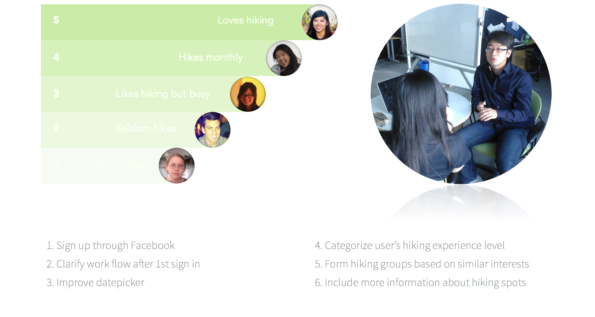
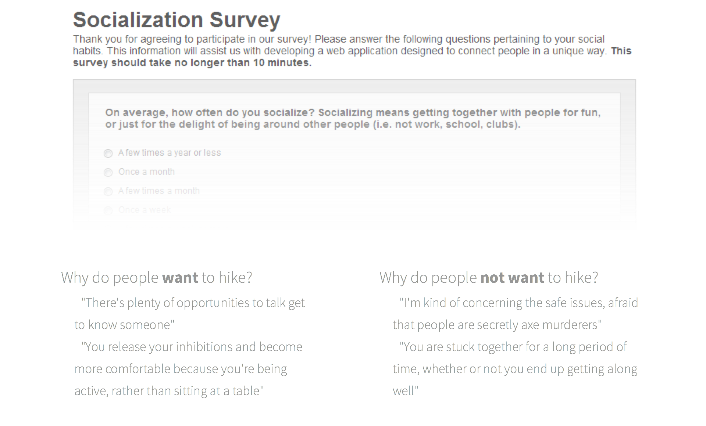
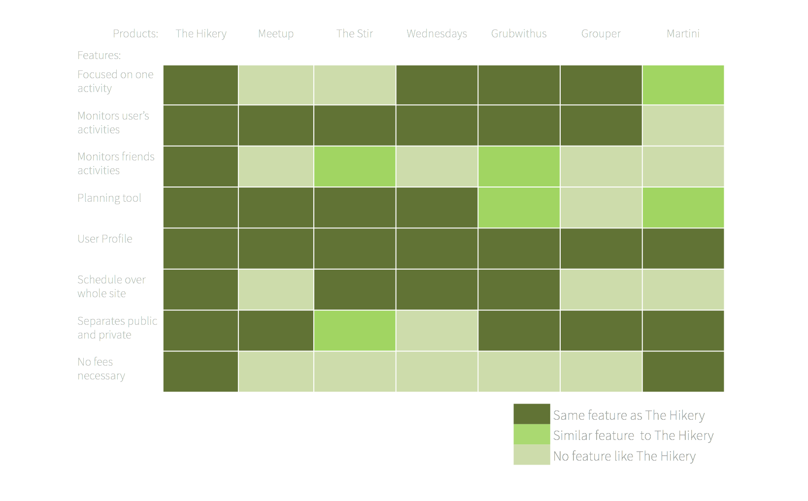

Project Goals
1. Investigate factors that motivate or deter people from hiking
2. Determine what attributes of a hike are most conducive to socializing
3. Identify the best process to enable a good socialization experience through hiking
Usability Testing and Interviewing

Online and In-Person Survey

Competitive Analysis

Key Findings
1. Factors that motivate or deter people from hiking:
Motivators: the outdoors, exercise, getting to know someone
Deterrents: safety, awkwardness
2. Attributes of a hike most conducive to socializing:
Lots of time to get to know someone
Relaxed atmosphere
Group settings
3. Best process to enable a good socialization experience through hiking:
Easy planning
Abundance of trail information
Hiking buddies with common interests